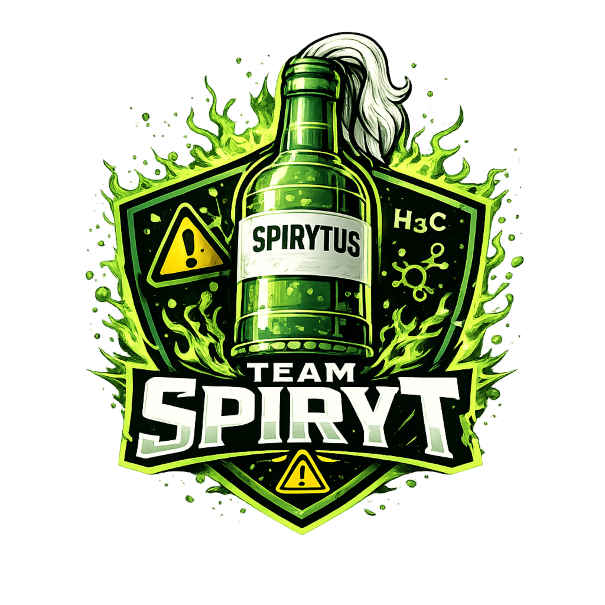
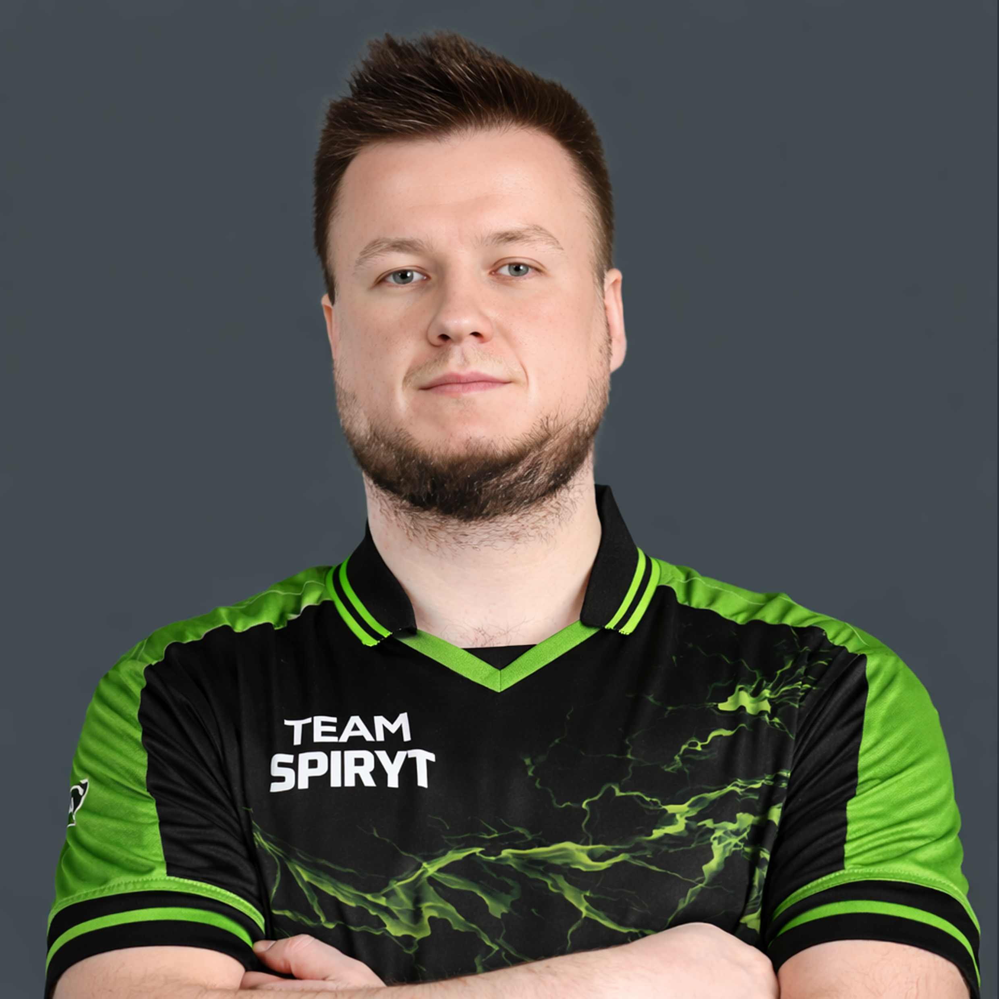
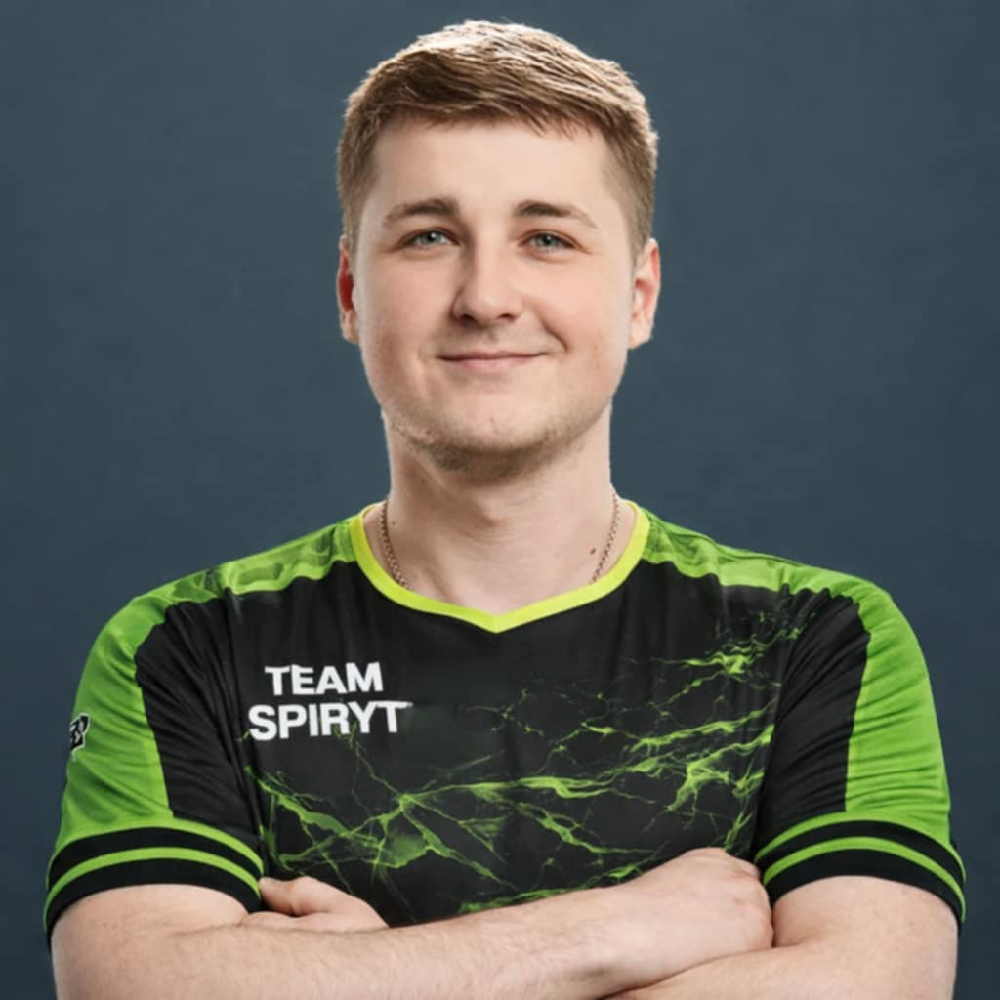
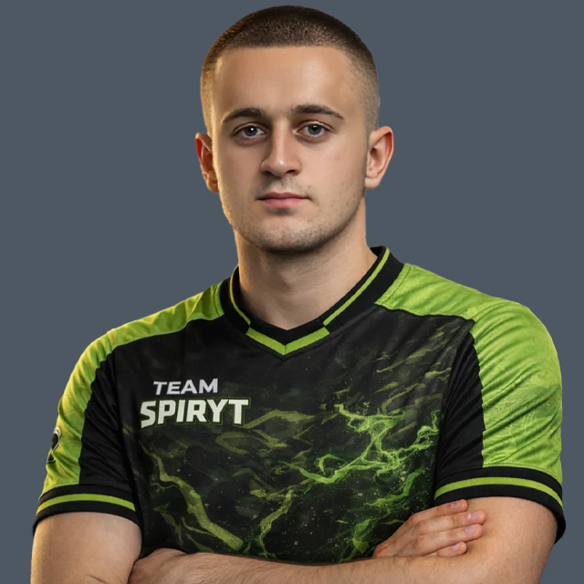
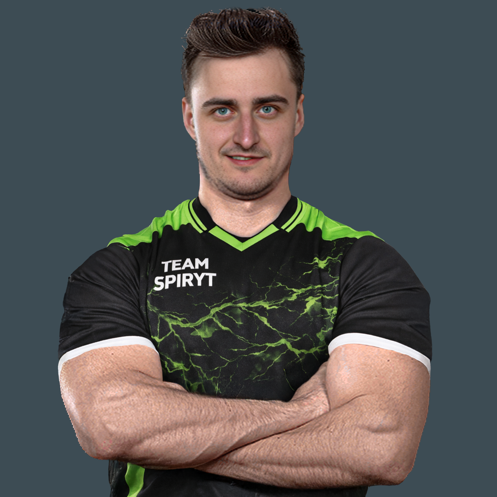
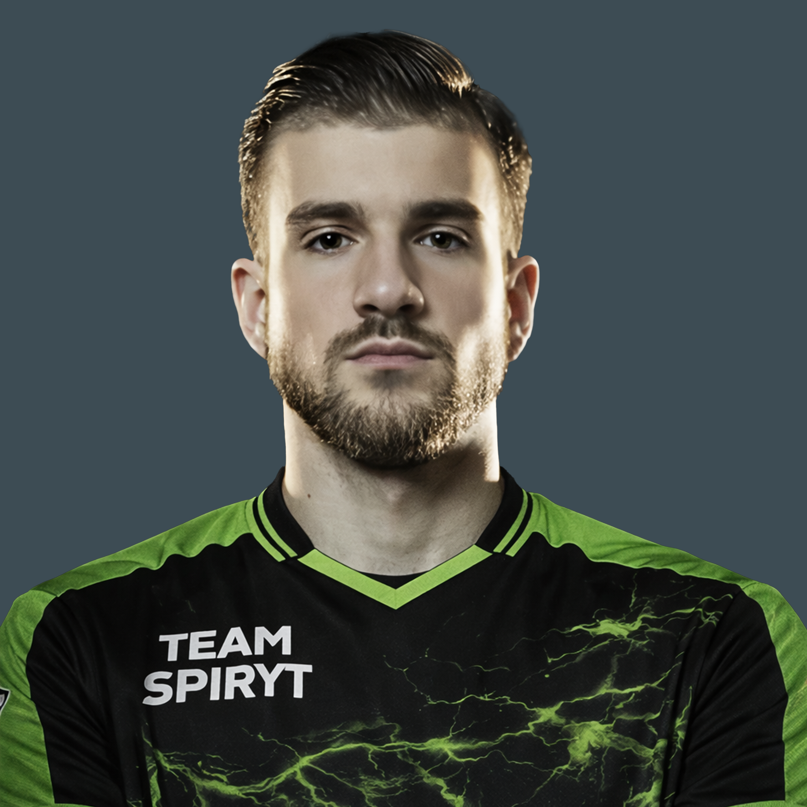
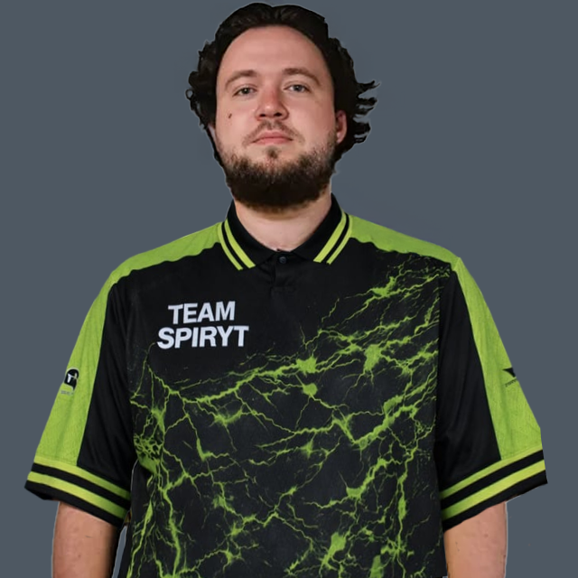
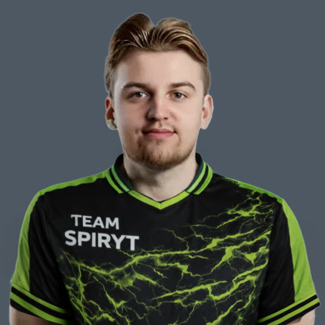
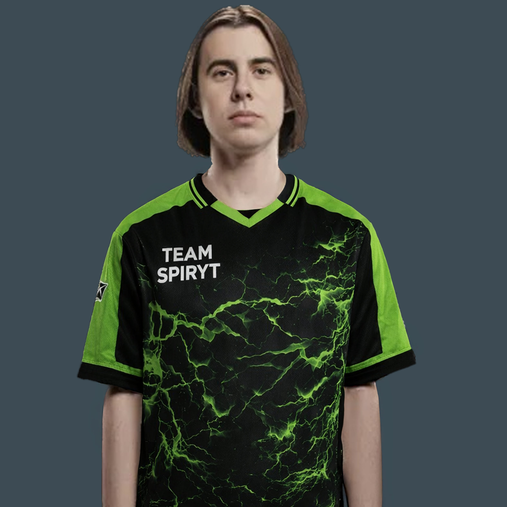
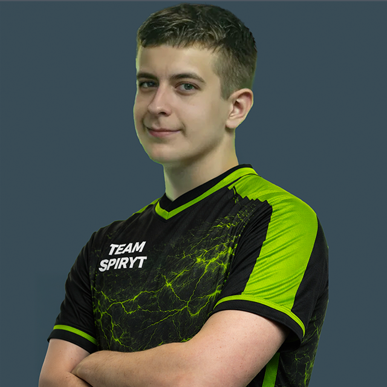

TEAM SPIRYT – DRUŻYNA ESPORTOWA CS2
Kim jesteśmy
TEAM SPIRYT to ambitna drużyna esportowa rywalizująca w Counter-Strike 2. Tworzymy zespół oparty na pasji do esportu, konsekwentnym rozwoju oraz profesjonalnym podejściu do rywalizacji. Naszym celem jest stałe podnoszenie poziomu gry i osiąganie coraz lepszych wyników turniejowych.
Skład podstawowy TEAM SPIRYT

Payex
IGL

Fiszu
AWPer

Tandes
Entry Fragger

Kajo
Support

Wieczi
Lurker
Styl gry TEAM SPIRYT
- Zorganizowana gra zespołowa
- Duży nacisk na komunikację i taktykę
- Elastyczność w dostosowaniu się do przeciwnika
- Regularne treningi oraz analiza rozgrywek
ŁAWKA REZERWOWA – TEAM SPIRYT
Rola ławki rezerwowej
Ławka rezerwowa w TEAM SPIRYT jest integralną częścią zespołu. Zapewnia ciągłość treningów, możliwość rotacji składu oraz bezpieczeństwo organizacyjne podczas turniejów.

Synnek
Rezerwowy (IGL)

Tomi
Rezerwowy (AWPer)

Kuczmi
Rezerwowy (Lurker)

Edek
Rezerwowy (Support)

Skrz
Rezerwowy (Entry Fragger)
Zawodnicy rezerwowi
- Gotowi do gry w każdej chwili
- Znają taktyki i mapy zespołu
- Biorą udział w treningach i sparingach
- Wspierają rozwój drużyny oraz rywalizację wewnętrzną
Dlaczego ławka rezerwowa jest ważna
- Stabilność i elastyczność składu
- Możliwość reagowania na zmiany personalne
- Utrzymanie wysokiego poziomu sportowego
- Długofalowy rozwój TEAM SPIRYT
Nasze cele
- Udział w ligach i turniejach CS2
- Systematyczny rozwój zawodników
- Budowa rozpoznawalnej marki TEAM SPIRYT
- Współpraca z partnerami i sponsorami